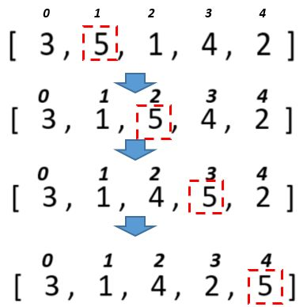

-
Задача 1. Генерація всіх підмножин: Реалізуйте рекурсивну функцію, яка генерує всі можливі підмножини заданого масиву. Наприклад, для масиву [1, 2, 3] можливі підмножини: [], [1], [2], [3], [1, 2], [1, 3], [2, 3], [1, 2, 3].
-
Задача 2. Дано масив 30 випадкових цілих чисел. Підрахувати скільки було обмінів під час сортування змішуванням.
-
Задача 3. Дано масив 30 випадкових цілих чисел. Підрахувати скільки було обмінів під час сортування включеннями.
-
Задача 4. Для розглянутих методів сортування спробувати вивести етапи сортування шляхом виведення відповідних таблиць за зразком.
Тобто кожного разу після обміну елементів вивести поточний стан масиву на екран.
-
Задача 5. Дано масив імен. Застосовуючи відповідне сортування та бінарний пошук визначити, чи є у масиві ім’я «Olga» і під яким індексом.
-
Задача 6. Дано масив імен. Застосовуючи відповідне сортування та бінарний пошук визначити, чи є у масиві ім’я довжиною 5 символів і під яким індексом.
-
Задача 7. Сформувати двовимірний масив (4 * 8) з номерами днів (описати окремий тип для днів). Заповнити його випадковим чином. Підрахувати для кожного рядка кількість неділь.